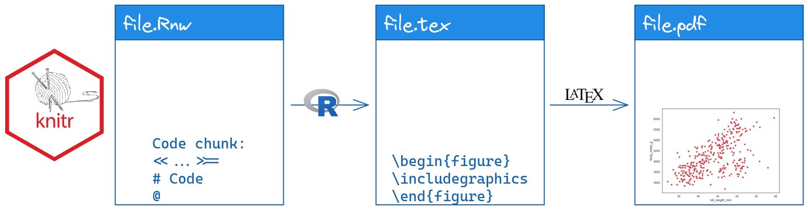
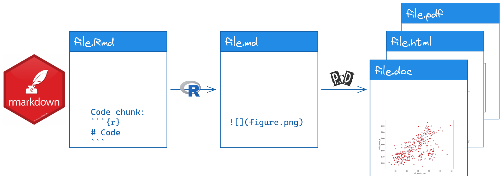
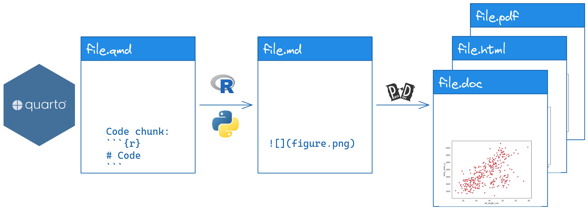
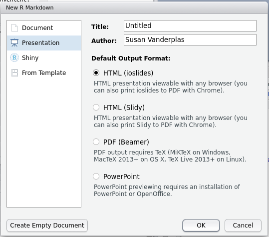
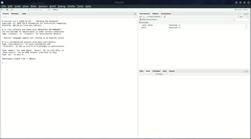

board_games <- readr::read_csv("https://raw.githubusercontent.com/rfordatascience/tidytuesday/main/data/2019/2019-03-12/board_games.csv")6 Reproducibility and Professional Communication
6.1 Objectives
- Create professional documents (slides, posters, CVs) using LaTeX and/or markdown
This chapter will be shorter in length than many of the rest, but you should not devote less time to it. Instead, you should spend the time playing with the different options presented here and deciding which one of each is your favorite. Rather than detailing all of the customization options in each package, I think you’ll have an easier time looking at examples, trying to customize them yourself to get the effect you want, and figuring out how to do that by reading the documentation, stackoverflow posts, and other help files – those are the skills you’ll need when you try to put this knowledge into action.
At the end of this chapter there are a few extras – for instance, how to use GitHub to host your documents, how to create a blog with blogdown, and more. You should feel free to investigate, but as long as you are able to create presentation slides, posters, and a CV, you’re good to go.

6.2 Literate Programming, knitr, rmarkdown, and quarto
Literate programming is a programming method where you explain the code in natural language (e.g. English) in roughly the same space that you write the code (in a programming language). This solves two problems: code isn’t always clear as to what its goals are, and natural language descriptions of algorithms aren’t always clear enough to contain the details of how something is actually implemented.
The knitr, Rmarkdown, and quarto packages are all implementations of literate programming. The packages tend to overlap a bit, because knitr and Rmarkdown were written by the same author, Yihui Xie, and quarto is the next generation of Rmarkdown that incorporates more options for using other data-science related programming languages.
-
knitris primarily focused on the creation of Rnw (r no weave) files, which are essentially LaTeX files with R code inside. Rnw files are compiled into pdfs. -
rmarkdownusesRmdorRmarkdownfiles, which can then be compiled into many different formats: pdf, html, markdown, Microsoft Word. -
quartousesqmdfiles, which are compiled into many different formats: pdf, html, markdown, Microsoft Word.
All of these programs work essentially the same way: code chunks are run in the specified language, figures are saved, tables are created, and the results are added to the intermediate file (.tex or .md). Then, another program (LaTeX or Pandoc) compiles the intermediate file into the final result. Understanding this process is key to being able to debug any errors you may encounter, because you need to identify which program is having the error - the code chunk? adding the results to the intermediate file? compiling from the intermediate file to the end result?
>= and ended by @. This file.Rnw is processed with R to produce file.tex, which has \begin{figure}\end{figure} code containing information about a picture. The tex file is compiled with LaTeX to produce file.pdf, which has a scatterplot.">


One major advantage of literate programming packages from a practical perspective is that it largely removes the need to keep track of graphs and charts when you’re writing a paper, making a presentation, etc. The charts and tables based on your method automatically update when the document is recompiled.
You’ve probably been using quarto to submit your homework throughout the semester. In this chapter, we’re going to explore some other applications of literate programming: creating slides, posters, and more.
6.3 Review: Quarto Formatting
This section’s material is stolen copied directly from the Quarto documentation [1].
Text Formatting
| Markdown Syntax | Output |
|---|---|
|
italics and bold |
|
superscript2 / subscript2 |
|
|
|
verbatim code |
Headings
| Markdown Syntax | Output |
|---|---|
|
Header 1 |
|
Header 2 |
|
Header 3 |
|
Header 4 |
|
Header 5 |
|
Header 6 |
Links & Images
| Markdown Syntax | Output |
|---|---|
|
https://quarto.org |
|
Quarto |
|
 |
|
|
|
|
|
|
Lists
| Markdown Syntax | Output |
|---|---|
|
|
|
|
|
|
|
continues after
|
|
|
Tables
| Right | Left | Default | Center |
|------:|:-----|---------|:------:|
| 12 | 12 | 12 | 12 |
| 123 | 123 | 123 | 123 |
| 1 | 1 | 1 | 1 || Right | Left | Default | Center |
|---|---|---|---|
| 12 | 12 | 12 | 12 |
| 123 | 123 | 123 | 123 |
| 1 | 1 | 1 | 1 |
Learn more in the article on Tables.
Equations
Use $ delimiters for inline math and $$ delimiters for display math. For example:
| Markdown Syntax | Output |
|---|---|
|
inline math: \(E=mc^{2}\) |
|
display math: \[E = mc^{2}\] |
If you want to define custom TeX macros, include them within $$ delimiters enclosed in a .hidden block. For example:
::: {.hidden}
$$
\def\RR{{\bf R}}
\def\bold#1{{\bf #1}}
$$
:::For HTML math processed using MathJax (the default) you can use the \def, \newcommand, \renewcommand, \newenvironment, \renewenvironment, and \let commands to create your own macros and environments.
6.4 A Very Brief Introduction to LaTeX
LaTeX is a document preparation utility that attempts to take the focus off of layout (so you don’t have to spend 30 minutes trying to get the page break in the right place in e.g. Word) and bibliographic details.
I’m not convinced LaTeX succeeds at freeing you from layout concerns, but it’s certainly true that it is much more powerful than Word for layout purposes.
The philosophy of LaTeX is that presentation shouldn’t get in the way of content: you should be able to change the presentation formatting systematically, without having to mess with the content. This (theoretically) allows you to switch templates easily, make document-wide changes in a single command, and more.
Try it out
In Rstudio, copy the text in the document below, paste it into a text file in the editor window, and name it test.tex. You should see a Compile PDF button show up at the top of the document. Click that button to compile the document.
\documentclass{article} % this tells LaTeX what type of document to make
% Note, comments are prefaced by a % sign. If you need to type the actual symbol
% you will have to escape it with \%.
\begin{document}
Hello \LaTeX!
\end{document}Most commonly, you’ll use the article document class for papers, and beamer for presentations and posters. Other useful classes include moderncv (for CVs) and book. ::: column-margin There is a LaTeX class maintained by the UNL math department for thesis formatting. You can easily add R code chunks to a LaTeX file by changing the extension of any .tex file to .Rnw.
The Statistics graduate students maintain a bookdown (rmarkdown) version of the UNL thesis class on github here. At some point, hopefully someone will port this to quarto. :::
There are several types of latex commands:
-
Declarations: statements like
\documentclass,\usepackageor\small, which are stated once and take effect until further notice. -
Environments: statements with matching
\begin{xxx}and\end{xxx}clauses that define a block of the document which is treated differently. Common environments include figures and tables. -
Special characters: another type of command that don’t define formatting or structure, but may print special characters, e.g.
\%to print a literal%character.
Both declarations and environments may come with both optional and required arguments. Required arguments are placed in {...} brackets, while optional arguments are placed in [...] brackets. You can, for instance, start your document with \documentclass[12pt]{article} to specify the base font size.
One of the most useful features in LaTeX is math mode, which you can enter by enclosing text in $ ... $ (for inline statements), $$ ... $$ or \[ ... \] (for statements on their own line), or using other environments like \begin{array} ... \end{array} that come in math-specific packages. Once in math mode, you can use math symbol commands to get characters like \(\theta, \pi, \sum, \int, \infty\), and more.
Try it out
With any document creation software, the easiest way to learn how to do it is to find a sample document, tinker with it, see if you can make things the way you want them to be, and then google the errors when you inevitably screw something up.
Take the sample document up above and see if you can do the following tasks: (I’ve linked to documentation that may be useful)
Add the quadratic formula and the PDF of a normal distribution to the document
In extremely large text, print LaTeX using the
\LaTeXcommandIn extremely small, italic text, print your name
\documentclass{article} % this tells LaTeX what type of document to make
% Add the graphicx package so that we can include images
\usepackage{graphicx}
\begin{document}
Hello \LaTeX!
% Include a figure
\begin{figure}[h]
\centering
\includegraphics[width=.5\textwidth]{../image/IllusoryContour.png}
\caption{Illusory contour image}
\end{figure}
% Add the quadratic formula and the normal PDF to the document
$y = ax^2 + bx + c$ can be solved to get $$x = \frac{-b \pm \sqrt{b^2 - 4ac}}{2a}$$
The PDF of a normal distribution is $$f(x | \mu, \sigma) = \frac{1}{\sigma\sqrt{2\pi}} e^{-\frac{(x - \mu)^2}{2\sigma^2}}$$
% In extremely large text, print \LaTeX
\Huge\LaTeX
% In extremely small italic text, print your name
\tiny\emph{Your name}
\end{document}You can see the compiled pdf here.
6.4.1 Knitr
A LaTeX document has the file extension .tex, but it’s very easy to convert a LaTeX document into a .Rnw (R-no-weave) document: change the file extension. Then, you can add R code chunks, and the .Rnw document will be compiled to a .tex document in R, and then the .tex document will be compiled to .pdf using LaTeX.
R code chunks are embedded in LaTeX documents using:
% start of chunk
<<chunk-name, ...options...>>=
@
% end of chunkYou can embed numerical results inline using \Sexpr{...} where your R code goes in the ....
You could in theory use python within knitr via the reticulate package [2], but it will be easier by far to use quarto. Pick the tool that does the job well.
6.5 Slides
6.5.1 Beamer (LaTeX) and knitr
Beamer is a powerful LaTeX class which allows you to create slides. The only change necessary to turn a beamer slide deck into a knitr slide deck is to add fragile as an option to any slide with verbatim content.
You can also create Beamer slides with Rmarkdown. Example presentation. Standard trade-offs (formatting details vs. document complexity) apply.
Check out the UNL-themed Beamer quarto template
Try it out
Download and compile beamer-demo.Rnw.
Can you change the theme of the presentation?
Add another slide, and on that slide, show an appropriate style ggplot2 graph of the distribution of board game ratings, reading in the board game ratings using the following code:
You can also create Beamer slides using Rmarkdown or quarto, if you want, but you may have more control over the fine details if you go straight to the Rnw file without going through markdown first. It’s a trade-off – the file will probably be simpler in markdown, but you won’t have nearly as much control.
6.5.2 HTML slides
RStudio has a host of other options for html slide presentations. There are some definite advantages to HTML presentations: they’re easy to share (via URL), you can add gifs, emojis, and interactive graphics, and you can set up github to host the presentations as well.
I have a repository for all of the presentations I’ve given, and I use github pages to render the html presentations. Very easy, convenient, and I never have to carry a flash drive around at a conference or mess with the conference computers.
The downside to HTML slides is that there are approximately 100000 different javascript libraries that create HTML slides, and all of them have different capabilities. Many of these libraries have extensions that will let you create markdown slides, but they each have slightly different markdown syntax and capabilities.

You can get the full details of any fully supported slide class in Rmarkdown by looking at the Rmarkdown book [3], which is freely available online. These guidelines will give you specifics about how to customize slides, add incremental information, change transitions, print your slides to PDF, and include speaker notes.
Quarto has simplified the slide options available to you - for HTML slides, you have one option, which is to use reveal.js. While this may sound limiting, it’s really not - RStudio/Posit (the company behind quarto) has done a ton of work to make quarto a lovely experience, and that extends to the slides. I have almost entirely switched to using quarto for everything because it’s so much easier to arrange figures, add alt-text, and style presentations. See the quarto presentation documentation here [4]. If you have collaborators who are stuck on MS Office, quarto allows you to compile to a PowerPoint presentation.
Rather than repeat the documentation for each slide package in this document, I think it is probably easier just to link you to the documentation and a sample presentation for each option.
Quarto:
Rmarkdown:
- reveal.js Example presentation
- ioslides Example presentation
- slidy Example presentation
- xaringan Example presentation, Example presentation 2 using UNL CSS theme
If you’re familiar with CSS (or happier tinkering to get the look of something exactly right) then xaringan and reveal.js are excellent full-featured options.
I relied heavily on 2D slide layouts available in reveal.js during my PhD prelim and defense.
A nice feature of reveal.js presentations is support for 2D slide layouts, so you can have multiple sections in your presentation, and move vertically through each section, or horizontally between sections. That is useful for presentations where you may not plan on covering everything, but where you want to have all of the information available if necessary.
UNL themed HTML presentations:
Try it out
Take a few minutes and try each of them out to see what feels right to you. Each one has a slightly different “flavor” of markdown, so read through the example to get a sense for what is different.
6.6 Posters
Posters are another common vehicle for presenting academic project results. Because posters are typically printed on paper or fabric, the standard file format is still PDF. As some venues move to digital posters, it is becoming more realistic to use HTML poster layouts that contain interactive elements.
6.6.1 LaTeX
Overleaf has a fantastic gallery of posters made in LaTeX.
There are several LaTeX options for making scientific posters: baposter, beamerposter, tikzposter are among the most common. We’ll focus on beamerposter here, but you are free to explore the other poster classes at will. As with beamer, you can easily integrate knitr code chunks into a document, so that you are generating your images reproducibly.
Basic code for a poster in beamer (along with the necessary style files) that I’ve minimally customized to meet UNL branding requirements can be found here.
Try it out
Download the beamer template and do the following:
- Change the 3-column span box to a 2-column span box.
- Make the “Block Colors” box purple
- Move the References block up to fill the 4th column.
6.6.2 Markdown
While most posters are still put together in PDF form, there is growing support for HTML posters, and many conferences have digital poster options for display. This may allow you to use interactive graphics and other features in a poster that would not translate well to PDF. Here is a list of Rmarkdown poster options; some even have PDF export capabilities so that you can have the interactive version plus a static version.
6.6.2.1 Posterdown
To start, install posterdown with install.packages("posterdown").

You can also find additional customization options here. As with other markdown items, you can customize things even more using CSS. The nice thing about HTML posters, though, is that you can directly link to them if they’re hosted on a site.
You can also print a poster to PDF by running the following command: pagedown::chrome_print("myfile.Rmd").
6.6.2.2 Pagedown
The pagedown package also has a couple of poster templates, including poster-relaxed and poster-jacobs.
{kind=link}
There are also templates for letters, business cards, and more in pagedown, if you’re feeling ambitious.
Try it out
Download the pagedown template and do the following:
- Change the 3-column layout to 4 columns. Adjust the breaks ({.mybreak}) accordingly to make the poster look good.
- Make the 2nd-level headers #249ab5 (cerulean)
- Move the References block to the 4th column.
- Print your poster to a PDF
6.7 Resume/CV
You can also create resumes and CVs in markdown and LaTeX. There is no real substitute for playing around with these classes, but I really like moderncv in LaTeX.
You can see my highly customized CV here, with timelines and numbered publications. It has to be compiled multiple times to get everything right.
Pagedown also comes with a html resume template (Use the menu -> Rmarkdown -> From Template -> HTML Resume) that can be printed to html and pdf simultaneously. There is also the vitae package, which has even more templates, integration with other packages/sites, and more.
At this point, the biggest reason I haven’t switched to HTML is that I really like my timeline CV and I don’t have enough time to fiddle with it more.
6.8 Hosting Content with Github Pages
Github will host HTML content for you using Github pages (case in point: this textbook). This means you can version control your content (for instance, presentations or your CV) and have GitHub do the hosting (so you don’t have to find a webserver, buy a domain name, etc).
Setting up Github Pages
- Create a new repository named username.github.io on your personal github site (not the unl-stat850 classroom group)
- Clone your repository
- Modify your README.md file and push your changes
- Go to https://username.github.io and see your README.md file rendered as HTML.
Github will render any README.md file as actual HTML; it will also allow you to host plain HTML pages. By default, the README file is rendered first, but in subsequent directories, a file named index.html will be rendered as the “home page” for the subdirectory, if you have such a file. Otherwise you’ll have to know the file name.
I tend to separate things out into separate repositories, but you can host HTML content on other repositories too, by enabling github pages in the repository settings. On my personal page, I have repositories for my CV, Presentations, etc. Each repository that has pages enabled can be accessed via https://srvanderplas.github.io/\<repository name\>/\<repository file path\>. So, to see my unl-stat850 repository, you’d go to https://srvanderplas.github.io/unl-stat850/.
I’ve been putting my presentations on Github since 2014, so it has a pretty good record of every set of slides I’ve created. I highly recommend this strategy - storing everything online makes it easy to share your work with others, reference later, and more importantly, easy for you to find in 3 years.
This mechanism provides a very convenient way to showcase your work, share information with collaborators, and more - instead of sending files, you can send a URL and no one has to download anything overtly.
Setting up Github Pages in an existing repository
If you want to track your quarto/rmarkdown code and then render the output to a separate folder, you can use the docs/ folder. Github has this as an option as well – where we selected “main” branch above, we would select “docs/” instead (it’s grayed out b/c there isn’t a docs folder in the repo). That is how this book is hosted - the book compiles to the docs/ folder, and that way the book is rendered in final form and you don’t have to see all of the other crud that is in the repository.
6.9 Additional Resources to Explore
There are many other XXXdown packages made for Rmarkdown. Quarto is more multi-functional and contains blog, book, and website capabilities in a single package. However, most of the things which worked in Rmarkdown also work in Quarto, and Quarto has clearly been built off of the success of the ___down packages for Rmarkdown.
bookdown(what I used to make this book in the SAS + R era)pkgdown(to easily build documentation websites for R packages)ROpenSci tutorial: How to set up hosting on github
liftr - use Docker to make persistently reproducible documents
In addition, @mcanouil maintains a list of Quarto talks, topics, tools, and examples that is worth a look.
6.10 References
[1]
Posit, “Markdown Basics,” Quarto. [Online]. Available: https://quarto.org/docs/authoring/markdown-basics.html#text-formatting. [Accessed: Oct. 17, 2022]
[2]
K. Ushey, J. Allaire, and Y. Tang, Reticulate: Interface to ’python’. 2022 [Online]. Available: https://CRAN.R-project.org/package=reticulate
[3]
Y. Xie, J. J. Allaire, and G. Grolemund, “Chapter 4 Presentations,” in R Markdown: The Definitive Guide, 1st ed., CRC Press, 2018 [Online]. Available: https://bookdown.org/yihui/rmarkdown/presentations.html. [Accessed: Sep. 28, 2022]
[4]
Posit, “Quarto - Presentations,” Quarto. [Online]. Available: https://quarto.org/docs/presentations/. [Accessed: Sep. 28, 2022]